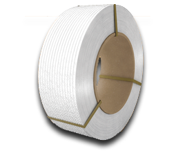

Добро пожаловать на сайт ООО "ПК Полимер" Наше предприятие - это динамично развивающаяся Липецкая компания, делающая всё, чтобы бизнес-контакты с нами были бы также прочны и крепки, как стреппинг-лента, которую мы производим!
Производственная компания ПОЛИМЕР в своей работе руководствуется тремя принципами:
Честность
Мы никогда не станем обманывать наших партнеров. Наша репутация дороже всего. Честность в нашей компании возведена в ранг высшей ценности.
Профессионализм
Работая с менеджерами нашей компании, наши партнеры обязательно почувствуют, насколько это удобно, работать с истинными профессионалами своего дела.
Технологии
Самые передовые технологии, используемые нами как в производстве, так и в дальнейшем сопровождении нашей продукции, позволяют нам собой гордиться.
Наша база знаний о полипропиленовой ленте.
Что же мы выпускаем?
Упаковочная полипропиленовая лента (стреппинг-лента) – это современный, практичный и недорогой упаковочный материал. Читать дальше
Преимущества перед стальной
Стреппинг-лента обладает рядом преимуществ перед стальной лентой: во-первых, ПП лента является более экологичным промышленным продуктом, чем стальная; Читать дальше
Упаковка, транспортировка.
Стреппинг-лента сматывается в бухты на картонные или стальные втулки, а также в некоторых случаях возможна смотка вообще без использования втулки. Читать дальше
Оборудование для работы с лентой
Полипропиленовая лента может закрепляться тремя способами: Первый - упаковка с помощью скрепы из относительно мягкого металла. Читать дальше